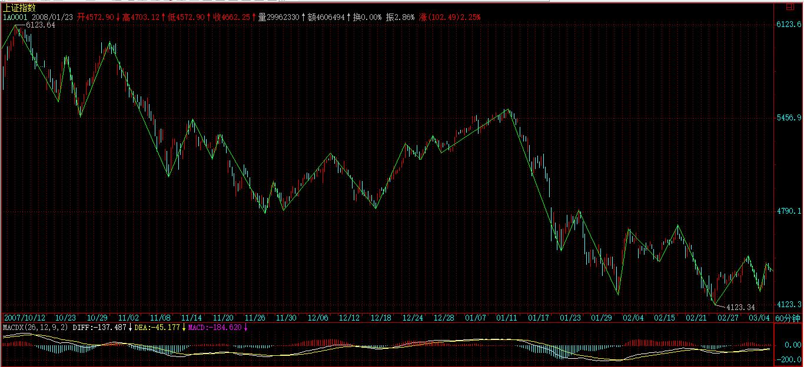
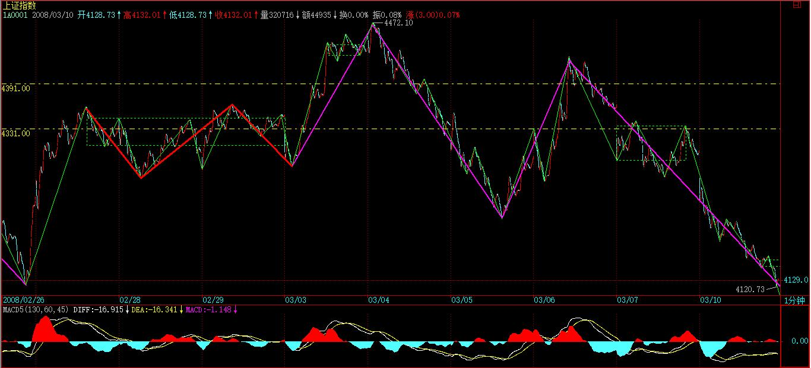
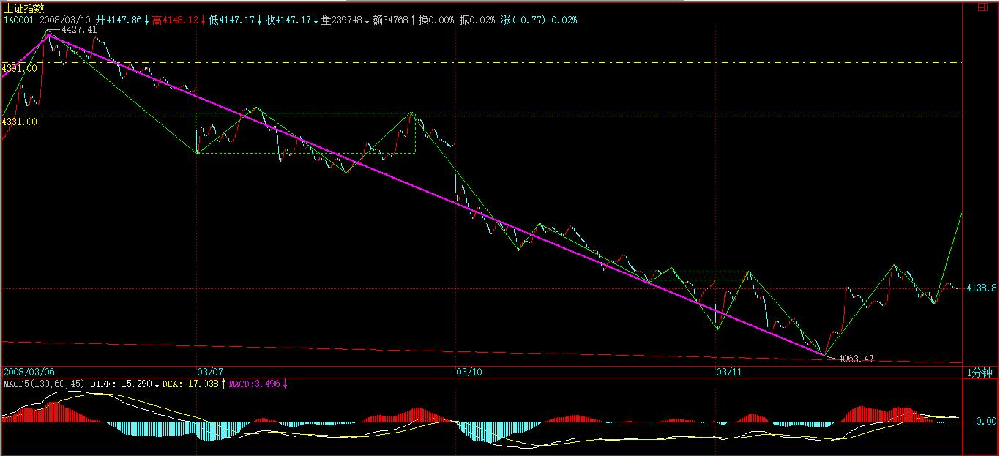
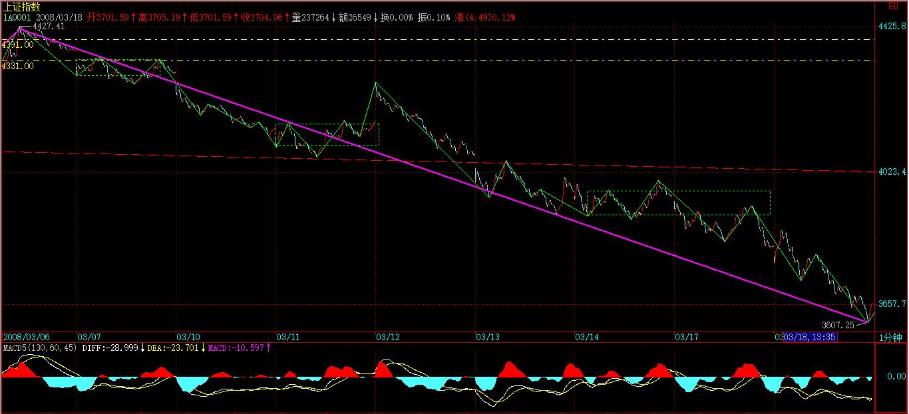

(2008-03-06 16:10:18)
如果是单纯地唯一分解，并不能显示本ID理论真正厉害之处，因为走势必完美对应的是一种最特殊、最强有力的唯一分解，这看似毫无规律的市场走势竟然有这样完美的整体结构，这才是最牛的地方。【韶山映山红】走势必完美，并不是对走势的发展做预判，而是一种分解进而分类的思想和方法。唯一分解是制胜的法宝，引入级别的递归就是革命性的突破了。】
最完美的系统，肯定是自然数了，为什么？因为自然数具有诸多的唯一分解方式，例如素数的分解，【韶山映山红】素数分解。素数，又称质数，是指除1和其自身之外，没有其他约数的正整数。例如 2、3、5、13 都是质数，而 4、9、12、18 则不是。 虽然素数不能分解成除1和其自身之外整数的乘积，但却可以分解成更多素数的和。 例如，21 = 2 + 19 是 21的合法分解方法。21 = 2 + 3 + 5 + 11 则是分解为最多素数的方法。】但还有一种最牛的分解，就是对于幂级数的唯一分解，因为有这种分解，所以自然数有记数法。例如，2的幂级数对应的唯一分解就是2进位，而10的就是10进位。如果没有这种分解，我们就不能用记数法记录自然数了。【韶山映山红】幂级数，数学分析当中重要概念之一，是指在级数的每一项均为与级数项序号n相对应的以常数倍的（x-a）的n次方（n是从0开始计数的整数，a为常数）。】
正因为这分解如此有力，所以我们都会觉得很平常，似乎自然数有记数法是天经地义的，其实，这才是自然数整体结构中最牛的地方。【韶山映山红】真理一旦被认可，并且被普及，也就成为了常识。】
而一般的数系，一般是没有这种性质的。【韶山映山红】在数学中，数系指的是数的不同集合，比如自然数，整数，有理数，实数。 自然数(N)。顾名思义，是在自然生活中所产生的数，最早是应用于计数，所以在最初的自然数中是不包含0的，因为0个东西表示没有，自然也就没有意义，所以即使到现在，0是否属于自然数的范畴，还一直存在争议。 整数(Z)。有自然数的概念，就会有对于数字的运算，对于自然数而言：加法是封闭的，大减小是封闭的，而小减大则出现未定义，所以人类就发展出整数的概念，允许小-大为负数。 有理数(Q)。在整数的基础上，乘法是封闭的，对除法却又是不封闭的，当出现2/3时，整数的数系就没法表示，所以出现了有理数，包含所有分数和整数。 有理数是由所有分数和整数组成，它们都可以化成有限小数，或无限循环小数。而无限不循环小数的提出，引发了第一次数学危机，便有了无理数的出现，无理数不能写成两整数之比。π就是无理数。 有理数+无理数的集合 便是实数。】
同样，本ID的理论给出的递归函数，完美地给出市场走势一个类似记数法一样的唯一分解，也就是说，本ID揭示了看似毫无规律的市场走势竟然有着和自然数有着类似的整体结构，完全超越一般的想象，这才是真正最牛的地方。【韶山映山红】“类似记数法”，因为不是机械、定量的进位，所以是类似。】
正因为本ID的理论揭示了看似毫无规律的市场走势有如此完美的整体规律，所以才有了其后一系列的操作可能。这才是走势必完美真正关键的地方。【韶山映山红】走势必完美是对市场走势的规律的揭示，也是操作的依据，这样的使用价值“才是走势必完美真正关键的地方”。】
因此，级别在本ID理论中就极端关键了。为什么？因为本ID的递归函数是有级别的，是级别依次升大的。所以，搞不明白级别，根本就不明白本ID的理论。【韶山映山红】不采用递归级别，而是采用Ｋ线图周期作为级别的，根本就不明白缠论。】
那么，这样一个整体结构有什么厉害的结论呢？
这可以推演的东西太多了，随便说一个，就是区间套方法的应用。如果市场走势没有本ID所揭示的整体结构，那么区间套是不会存在，也就是没有操作意义的。因此，区间套的方法，就是走势必完美的一个重要的应用。有了区间套，买卖点的精确定位才有可能，也就是说走势必完美的存在导致了买卖点可以精确定位，这显然是操作中最牛的一种方式了。
从1分钟一直到年，对应着8个级别，其实，这些级别的名字是可以随意取的，只是这样比较符合习惯。否则说级别1、2的，容易搞不清楚。【韶山映山红】换句话说，任意级别K线图为起点做递归，都会有一定程度上不一样的结果。】
当然，加上线段与笔，可以有更精细的分解，但一般来说没这必要。【韶山映山红】初始化函数和递归函数的不同价值。】
任何走势，都可以在这些级别构成的分解中唯一地表达。但一般来说，对于一般的操作，没必要所有分解都搞到年、季、月这么大的级别，因为这些级别，一般几年都不变一下。你看，从6124点下来，N个月了，还在30分钟级别里混，【韶山映山红】96个交易日，横跨2007.10-2008.3，将近5个自然月。】
【韶山映山红】日线图的笔划分。】
【韶山映山红】60分钟图的笔划分。线段划分失真。】

【韶山映山红】30分钟图的线段划分。】
所以，一般来说，1、5、30分钟三个级别的分解，就足以应付所有的走势。当然，对于大点的资金，可以考虑加上日级别的。【韶山映山红】操作级别5分钟，短差级别1分钟，进退级别30分钟。】
也就是说，任何走势，都可以唯一地表示为a1A1+a5A5+a30A30的形式。
【韶山映山红】自然生长的走势类型分析图上，就是各种的“a1A1+a5A5+a30A30”。如果是同级别分解，“任何一段走势，都可以根据不同的级别进行分解，不妨用An-m的形式表示根据n级别对A段进行分解的第m段，就有，A=A1-1+A1-2+A1-3+…+A1-m1 =A5-1+A5-2+A5-3+…+A5-m5 =A30-1+A30-2+A30-3+…+A30-m30 =A日-1+A日-2+A日-3+…+A日-m日 等等”。】
而级别的存在，一个必然的结论就是，任何高级别的改变都必须先从低级别开始。例如，绝对不可能出现5分钟从下跌转折为上涨，而1分钟还在下跌段中。
有了这样一个最良好的结构，那么，关于走势操作的完全分类就成为可能。【韶山映山红】走势完全分类，相应的操作也要完全分类。】
完全分类，其实是一个超强的实质性质。【韶山映山红】实质，是指事物本身所具有的，决定事物性质和发展的根本属性，实质往往隐蔽的，要透过现象去分析。】
学点现代数学就知道，绝大多数系统并不一定存在完全分类的可能，而要研究一个系统，最关键的是找到某种方式实现完全分类，说得专业点，就是具备某种等价关系。【韶山映山红】传统技术分析的哲学是历史的重演，没有考虑完全分类的问题。】
【韶山映山红】等价关系：设R是非空集合A上的二元关系，若R是自反的、对称的、传递的，则称R是A上的等价关系。研究等价关系的目的在于将集合中的元素进行分类，选取每类的代表元素来降低问题的复杂度。
自反：任意x属于A，则x与自己具有关系R，即xRx。
对称：任意x,y属于A，如果x与y具有关系R，即xRy，则y与x也具有关系R，即yRx。
传递：任意x,y,z属于A，如果xRy且yRz，则xRz。例如，三角形的相似是等价关系：A相似A；A相似B => B相似A；A相似B，B相似C => A相似C。】
【韶山映山红】缠论的这个等价关系是什么？可以做个专题，以后研究。】
而由于走势必完美，所以走势就是可以完全分类的，【韶山映山红】如果走势必然怎么样，就能够预测了。由于走势必完美，所以走势就是可以完全分类的，这里说的是可以完全分类，而不是可以预测。所以要正确理解缠论的必然。】而所有的分类，都有明确的界限，【韶山映山红】完全分类就要求有明确的界限，而明确的界限又带来明确的状态判断。】这样，任何的走势都成为可控的。【韶山映山红】任何的走势都成为可控的。控什么？控制走势？这样理解就与缠论的基本哲学相违背了。】这种可控并不需要任何人的预测或干预，【韶山映山红】不干预那又算什么可控？不预测还要可控干嘛？可见，可控的不是走势本身。】而是当下直接地显现的，【韶山映山红】有明确的界限，就有当下直接的显现。】你只需要根据这当下的显示，根据自己的操作原则操作就可以。【韶山映山红】根据这当下的显示，根据自己的操作原则操作。这就是缠师说的可控。任何走势都有可控的操作。】
注意，完全分类是级别性的，是有明确点位界限的。【韶山映山红】１，完全分类是有级别的。 ２，完全分类是有明确点位界限的。】而不是粗糙的上下平的无聊概念。也就是说，本ID的理论完全是数量化的，因此而就是精确化的，里面不存在任何含糊的地方。【韶山映山红】加上动力学分析，形态就有完整的数理化的点位判断。】
所以，明白上面这些，这样就有了一个大概的框架，而不至于迷失于理论中了。【韶山映山红】走势必完美是缠论的框架。】
【网文】背驰可有可无
回答一个问题，也是重复说，放这里。大兴机场，雄安大兴，看来中国在走自己的路，让别人无路可走这条路上一走到底了。大兴机场长时期内将会是一极点，除了中国自己和外星人，在可见的将来都不会见得有比这更上位的东西，所以说它是新世纪七奇迹首位一点也不为过，百年后回望，比同长城。
扎哈不妥协，遗世独立，在无路的地方走出路来，和现时的国风非常吻合。但当一个事物自己极端协调的时候，自然就和周围格格不入了。所以扎哈说“我为什么要和周边的建筑保持和谐？它们都是屎，我为什么要跟屎保持和谐？”这也是一种存在。以建筑的方式和以哲学的方式和与建筑哲学这三种方式看扎哈的建筑，会得出三种不同的完全相异的结果，也算是一个极品了，从扎哈身上和她的作品中看到整个世界扭成一团的痉挛式冲突，视觉上非常冲击，正正体现此时中国欣欣向荣的冲劲和疼痛，把这种力用上几十年，回归平和吧。
2019 · 国泰民安
--------------------------------------
（正文）
偶然看一下。如果你是近几次看我的东西，我还是例行说说如下：新人莫近，我的东西有毒。第二是这些东西只为个人记录，不交流，所以你看着开心的就开个心，我少交流。
非常适量的回答，作为对这个东西的回馈。普遍性的问题到处都是答案，自己是可以找到的。这本质上是和交易有关，交易向来独立，别人行的东西自己用就是不行，或者自己觉得可以的，在别人手上就是雷。
如果你是要把缠说的这些东西用在交易上，是认真的，那按着我自己的看法，提意你留意一下一些：
缠当时写那些东西的时候，Ta的出发点是以“全人类白痴”的态度写的，所以对“交易”那个东西，Ta是从1+1开始讲。
所以在这种情况下，从0开始讲起，一些基本的技能类的东西是绕不过去，一定要说，不但要说并且在说的过程中还要十分细致和深入，背驰就是这样的东西，讲得十分细致，十分大篇幅，但其实上是可有可无，只是很多种工具中的一种。
缠论的核心不是背驰，背驰可有可无，完全不用背驰一点问题和困难也没有，但有这个背驰则会锦上添花。
而如果某种缠论方法是把背驰放在核心位置的，围绕背驰而转的，那这种方法和一直以来的技术分析无二，只是把缠论变成一个更专业更深入的技术指标或技术分析，这样的话就和缠放这种方法出来的大旨完全相异了。也就是说，缠一直在说洗心革面的事，而如果Ta提供的一种方法只是一种高明的技术分析，那洗什么心革什么面呢？高明的技术分析只有提炼的能力，没有洗革的能力。当认识和确定了这一步之后，会因为看到背驰强大的提炼能力，这当然要重新把它放进来作为一个强大的能力存在。
缠论的好处在Ta在讲述一种体系，对所有“小白”提供一种不同于Science式的思考的结构(“科学是一个建立在可检验的解释和对客观事物的形式、组织等进行预测的有序的知识的系统”。<----- 网上找的，缠论不是这种结构），缠论这种结构形式简单化提炼化后的话叫“走势终完美”，这种结构不同于现代教育体系中的那种由因而果的思考方式，所以你用既有的已经蚀刻在你脑中的思维去接触这个方法将会是处处都错，无法解释。
也就是处在某的角度，要知道在某眼中你将会是处处均错就是了，这种处处是错并不是某与某的差距，而是某与某的差异，正常人话来说，是说不在同一个频度上。
“背驰的完全确认需要反转的确认，换句话说，因为出现了反转所以之前的趋势终结才叫背驰，是不是还可以这样理解？”
不是，背驰就是背驰，实时的背驰就是实时的背驰，实时它在背驰，当时它就在背驰，事后才确认的背驰，叫“事后才确认的背驰”，“事后才确认的背驰”和实时的当时那个“背驰”是两个完全无关的物体，并不是曾经的当时的那个“背驰”发展了，成为“事后才确认的背驰”。(这部份解释不清，就是线状的“背驰段”，点状的“背驰”与属性状的“确认的背驰”的这几个东西在这一段没有解释清，不去想了，因为一时三刻也不可以想得很清明，我只是看到它们的区别，说的话要找一套自洽的说辞出来。）
所以既然是两个东西，设计上就是针对两个东西可以有不同的处理方法，处理的方法可以是针对两个同时起作用的，也可以仅单独针对一个，Ta都讲得很细致了。具体上，针对当时“背驰”的那个的，是第一类买卖点，然后是等等、等等，等一大堆。
“完全确定都是在事后，没有操作意义的，都是文字游戏”
我们的世界就是这样，只是因为科技的发展在某种程度或某个方向或某个方面上使我们误以为确定都是确实和实在的，并且以这种确定的确定作为推导的起源，而可以去确定未来的结局，在科学体系的支撑下这是明确可以做的，但是这种由因而果是有边界和适用条件的，但往往我们习惯上会忽略掉这个边界条件而认为，确定都必需是确定的，确定才有意义。
而事实上我们就是生活在这样的一个完全确定都是在事后的世间中，你去高考了，高考的确定是事后，你去见工了，见工的确定在事后，那你的一切行为有没有意义？你的一切是不是一个文字游戏，如果你认为是，市场就映射出你的这个“是”，如是你认为不是，市场就会映射出你这个"不是”，所以“没有操作意义”“是文字游戏”这样的东西，你自己去找是与不是，这是你认识这个世界的方式，市场则会在你确认之后，反映出你这种认识，如果是处在“是与不是之间”，市场自然也会反映出这个“是与不是”。
辟如，你去高考了，高考的确定是在事后，然而在你在考场的那一瞬间，有人早己经知道你高考的确定将会是什么了，而更利害的人在那个瞬间己经知道你将会坐在那个大学课室中了，但对于那些人来说，即使在“你的高考”他们可以非常确定，但在判断你的高考的这件事上的“他的高考”，他们也自然会有他们自己的完全的确定要事后。所以对待这样的世间，你自己找出来的的东西是什么。
这样一来结果则将会是这样的：无论“是”又好，“不是”又好，“有意义的还是无意义”也好，都可以有相对应的手法在市场中来钱，重要的事情是无论是它有意义的还是无意义，“你”能不能来钱。
这里就已经是我上面所说的两个体系的冲突，你的脑中认为: 不确定的事不来钱；来钱的事情要有”意义“才可以来钱；玩文字游戏不可能来钱。
而缠的体系中则是：有没有意义都可以有来钱的方式；确不确定，事不事后都可以有来钱的方式；玩文字游戏不来钱。
所以以最简单化的态度来说，或者是两个体系都可以接受的区间来说，对缠论的态度在这个区间中则是：学缠论不是在找“意义”，而是在找“方式”。
如果你不是天生就可以在两种体系中跳转的人，在刚站在缠论面前的起点时，还是先把“方式”搞明白为第一事，而不是去找那些“意义”。大白话来说就是先把缠说的东西听明白并记下，而不是在这里格格叫叫这里是核心那里是核胆。
世俗一点来说，也就是在说态度是缠论在“你”身上能不能来钱，不来钱，丢了它就是，本来就是一个“无意义”的东西，去找别的方式；或者如果不丢的，那你就要用缠论找“你的方式”，而不是用缠论去找客观的“意义”。
但是在这个过程中找到的“方式”，确实也可能就是客观的意义，因为抬头去看一下：我们的世界就是一个事后确定的世界，那么在这种世界中，它的意义是“无意义”，或许你最后找到的“意义”，就是一个“无意义”，并以此建立了“你方式”。
意义不来钱，“你方式”学不来，“你方式”也讨论不出来。
好了，这些都够了吧。自已去找，不要依靠任何。
附：
“那么，我们是否要等到回拉才决定进出？当然可以，可以等回拉后再一次向上，形成所谓的第二类买卖点进行操作。这种操作，完全可以不用背驰概念，纯粹就用三类买卖点就可以。
当然，实际操作中，可以用背驰，在第一类买卖点操作，”《缠中说禅2007-08-21 16:20:01》
光用形态学，就足以形成一套有效的操作体系。只是在形态学中，由于没有背驰的概念，所以第一买卖点是抓不住了，但第二买卖点是肯定没问题的。《教你炒股票72：本ID已有课程的再梳理》
(2008-03-07 15:12:32)
平安的一天闹剧被揭穿后马上露出本来面目，像平安如此大的动作，而且平安自身又深度介入二级市场，无论如何，在其增发有管理层的最终结论前，都应该停牌。否则，像现在一样，一个股票完全影响市场的走势，对市场的稳定是极大的伤害。
【韶山映山红】网文：平安增发获通过不能算新闻，但以如此高的比例（赞成票高达 9 成以上）获通过，可着实算新闻。 这个结果意味着一件事：此前所有骂平安的人，原来都不是平安的股东。堪称“遍身罗绮者，不是养蚕人”的证券版写照。或许是此前反对平安增发的投资者，早已用脚投票、走人了，所以留下来的全是平安增发的赞成者。总之，此前被千夫所指的平安千亿融资议案不仅被平安股东所认可，甚至在股东大会通过的第二天，平安干脆一度涨停，最终收盘上涨 7.87% 。一切按市场规律来办，事情就简单多了，比如说：除了平安之外，国航 - 东航同门兄弟收购案、国美 - 三联商社隐身收购案，皆属于此类“简单化”事件。此前，我们所热衷的“口水仗”皆是做表面文章，与实际结果无关。 】
今天的大盘，勉强继续保持原来4331上下5分钟的震荡，
但所有股票都有了疲态，股票这东西都要有点连贯性的，经常被一些无聊的突发性事情干扰，那就不仅仅是审美疲劳的问题了。
如果反复冲击4391点都不能站稳，每次刚上去就出些妖蛾子，那么，大盘再次探底就成了必然的选择。现在，给大盘的时间不多了，如果下周初还没有起色，那么再下探甚至破底都不是什么奇怪的事情，毕竟现在离4123点也就一步之遥。
当然，无论大盘怎么走，暂时都可以看成是原来那大的30分钟的震荡。
中线上，一个很切实的问题就是，如果两会开过后还没有什么上去的动力从基本面角度给出，那么，一次狠跌的过程砸出大的空头陷阱可能就是一个很正常的选择了。
大盘可能面临的最坏情况就是，这里反复折腾不出结果，然后创业版出来，热钱都跑过去，这里变成一座围城，无聊地在几百点的空间上耗上N个月甚至一年。这种情况并不是不可想象的。【韶山映山红】“无聊地在几百点的空间上耗上N个月甚至一年”，为什么不会演变成30分钟的下跌趋势呢？以后研究★】
当然，现在给多头的时间还有，多头还有反击的机会，就算创新底，也不是世界末日。现在的问题是，如果一些根本性的问题不解决，就算盘住了，那么上涨的理由呢？难道上涨就为了给平安之流去表演？上涨的空间如何打开，这需要基本面的支持，而这基本面现在又在哪里？【韶山映山红】30分钟中枢，1分钟下跌趋势离开，5分钟盘整返回，形成30分钟级别的三卖。形成三卖的最后一个5分钟中枢盘整背驰，然后5分钟级别的二卖。这一波震荡到尾声了。】
周末，不说股票了。
先下，再见。
(2008-03-08 11:45:14)
有这般痴汉，翳眼生华，称此地为污土，彼地为净土，行如基督教之苟且事，却不知此娑婆世界，何处非黄金为地、琉璃布天？以彼之漏眼，安可辩之？
西方无净土、东方非污土，皆尔心之造作。念佛者，实念无相之自我天真佛，乃亿万莲花往生不可换也。而痴汉之念佛，以六识之妄识行之，安有出期？
花开见佛，实有其事，但以此为执，则亿万佛出世也救之不得。无此识见，妄称念佛。
有这般痴汉，称修密而即身成佛，不过自欺欺人，其所成就者，犹不及大罗汉之一二，安言成佛？一身与亿万身，不过幻中游戏；一世与三大劫，亦不过梦中演排。于此妄分甲乙，可怜可悯矣。
更有这般痴汉，称参禅而一悟成佛。而佛者何曾迷？无迷何须悟？尔等悟者实大误也。若参禅有所悟，则皆有求之痴心作怪，因悟更迷，可悯可怜矣。
念佛、修密、参禅，皆万千法门之一门。而条条菩提路，处处涅磐门，岂是尔等善恶得失之妄心可测度？
真修行者，成一切魔王、入一切污土，于地狱三涂而成就，安可以求净土之安逸而偷心？宁生亿万地狱，也不住片时净土，此真修行者也；宁亿万世不成佛而入一切污土而行菩萨道，此真修行者也；宁亿万身为三涂众生而救三涂，也不于一身而成佛，此真修行者也。
你连魔王都成不了，还想成佛？做梦去吧。
(2008-03-10 15:15:31)
现在最大的问题是什么，用脚指头都能想明白。但管理层那已经成为滑稽表演的基金新发依然如故。那么，大盘也只好紧跟平安将破罐破摔进行到底了，没有比今天创新底更能配合管理层基金连发的滑稽与幽默了。【韶山映山红】证券日报：“据新华网消息，目前，每周五批准新基金或已成为常态。记者７日获悉，有５家基金公司新基金发行申请获得证监会批准，分别是华富收益增强债券基金、长信双利优选混合基金、银河竞争优势成长股票基金、兴业社会责任股票基金和益民债券基金。”】

管理层大概认为，只要他们批准了，那些基民（一个比股民还恶心的名字，让人想起饥民）就会如饥似渴地抢光他们的施舍。但现实是什么？一个过于滑稽的举动，只能让人远离，连唾弃的兴趣都没有。
市场是最现实的，有行情，有上涨理由，资金不请自到，否则，自己画饼自己玩去吧。本ID已经多次说明，就算现在减印花税，也没用。为什么？因为没有上涨的理由，上涨难道是为了再去成就平安之流？【韶山映山红】查股票交易印花税历史，2005年1月24日下调为1‰。2007年5月30日上调为3‰。2008年4月24日下调为1‰。2008年9月19日起，由双边征收改为单边征收，税率保持1‰，至今。】
在这如此影响市场的最基本融资规范没有解决前，管理层如此地反应，确实只能让市场寒心。现在市场需要的是明确的法规，一个明确的预期，否则，所有的上涨都不过是短促的反弹，不能构成真正的行情。
技术上，上周已经说了，本周初没东西出来，大盘破低并不是什么奇怪的事情。周五那1分钟中枢有极大的可能成为新的1分钟下跌的第一个中枢，今天早上那微弱的反弹构成该中枢的第三类卖点。
当然，由于资金大量从大盘股抽离，让那些自以为是的大盘股自己牛去，自己圈钱自己玩去，因此，反而成就了中小盘题材股行情的延伸，这中小盘股至少胃口没那么大，而且也更好在各层面上控制。大盘下跌，不过给这些股票一个洗盘或打压吸纳的机会。
鉴于目前这么滑稽的氛围，资金只能以更大的投机去获取更大的利润。大盘股的圈钱投机竟然如此堂而皇之，那么，大中小资金也可以这么玩，选择各自适合的投机品种，让市场继续分裂，让题材投机的风暴来得更猛烈，这只能是还想在场里折腾的资金唯一的选择。
今天，大跌，认购权证一反常态地暗潮涌动，就是这种新的投机行为一个很好的序幕。而今天，又有不少中低价股开始有新资金注入，借指数跌而潜伏进入，本来就是很正常的事情。【韶山映山红】以后查证。★】
一句话，让投机来得更猛烈些。这种游戏当然不适合所有人，没这种投机细胞的，就小板凳看着，等基本面有根本改变再说。有的，当然睁大眼睛，发现一切可投机的机会，选择最适合自己的去投机，劫一票换一地。资金需要收益，资金很饿，总不能一季度没完就不干活吧。
请明白一个最简单的道理，现在那些所谓的黄金股、绩优股、高价股，不过也是从垃圾股的垃圾价起来的，上去了就摆阔圈钱？那就让他们都死去吧。能制造你们，难道就不能从现在的垃圾里搞出黄金来？
题材都是人造的，股票都是人炒的。没人，什么都白搭；有人，有什么不能创造？
先下，再见。
(2008-03-10 16:21:13)
本来想写课程，不过还是先写写这个。
中国的大机构，在N年还是很蔫的。但因为出身正，几年光阴，现在都牛得不得了了。世界也500强了不少，个个鼻孔都插上了大葱。
有那样的环境、那样的资源，任何一个只长了一边脑子的，都可以干出这样的成就。但这些机构开始膨胀，插上大葱就满世界晃悠去了。
结果怎么样了？世界期货市场上，最喜欢看到的是谁？当然是中国的大机构们。大家都开心地等着，看，那送钱的又来了；世界的股权市场上，现在最喜欢看到的是谁？当然是中国的大机构们，看，那烧钱的又来了。
真是很难想起，这些大机构们，在世界金融市场上什么时候干过一件让人觉得是人干的事情？一个律师就可以在全世界最大之一的公司中坐阵中军，请问，这位先生，在联办的时候，在后面一系列的资本市场活动中，除了夸夸其谈，有实际操作过任何一个大的市场活动吗？【韶山映山红】《高西庆掌舵 中投高管名单初定》楼继伟、高西庆、张弘力、谢平、胡祖六……即将成立的中国投资有限公司(下称“中投公司”)，管理层阵容可能纳入一批堪称豪华的名单。此外，据称还有一位央行高层将进入核心管理层。 这家掌握着2000亿美元巨额资金的公司，尽管仍未诞生，其每一笔投资已引来广泛关注。作为中投公司的第一笔投资，黑石集团从浮盈到浮亏，也再次引发了国内对外汇投资运作方式以及风险控制的争论。 现在，已初步确定财政部、央行、社保基金理事会及国际知名投行人士将加盟中投公司。他们到底能为中投带来什么，中投将确立何种投资管理模式，引人关注。】
这市场是干出来的，不是谈出来的，更不是读出来的。
本ID早给这些机构一个最好的定位，就是继续窝里横，别出来丢人现眼了，他们无论从人才到结构，都完全是一个可笑的闹剧。
所以，本ID一直鼓吹，要把中国的窝给做大，让肉烂也烂在自己锅里，就是本ID对这些机构的水平一点信心都没有，去当炮灰，还不如当缩头乌龟。只要乌龟窝够大，成为世界第一大，让全世界的非乌龟都只能往这跑，那缩头乌龟也能成忍者神龟。
可惜，我们的机构们牛惯了，他们竟然还想圈国内的钱去玩他们的全球化游戏。本ID可以断言，去一个死一个。在金融领域，可不是单纯的低级制造业。用中国人民的血汗去让他们自己去爽，去一时炫耀他们所谓的成就，可能吗？
本ID一直旗帜鲜明地反对一切企图把中国的资金往外搞的行为，从那什么无聊直通车到什么搞笑QDII。事实证明，直通车已经成了闹剧，QDII已经成了悲剧，难道我们还希望我们的大机构继续胡闹下去吗？
你们向上爬的水平当然是有的，但你们在国际市场运做资本的水平，不是插上大葱就好使的。这就是中国大机构的现实状况，别插了大葱满世界晃悠了，回圈里去吧。
(2008-03-11 15:22:15)
今天，所有人都盯着那被多空双方惦记了N个月的4062点上的周线缺口，
结果，抢跑的不少，
造成还差1点没补完。
当然，对于短线来说，这并不特别重要。技术上，那1分钟的下跌也形成了，
目前唯一需要确定的是，第二个中枢是直接第三类买点反弹上去，还是把a+A+b+B+c的c给走出来再标准背弛上去。【韶山映山红】这里已经中枢盘整背驰反弹了，反弹也回到了中枢区间。但是完全分类的角度，依然不排除再度跌破、形成三卖然后趋势背驰。★】
前面，已经有两个类似的底点，今天的底点，基本在前面两个底点的连线上。
现在，大盘有初步的倾斜三角形的形态出现，
但关键是这两个底点连线不能被破掉。
由于这次下跌只是1分钟级别的，

对于原来的30分钟震荡并不能制造真正的破坏，
所以，站在6124点下来的30分钟下跌角度，真正的背驰并没有出现。
当然，盘整背驰也可以制造底点，然后再第三类买点地直接上去，但这需要后面的确认，在确认之前，震荡的格局是不会变的，【韶山映山红】盘整背驰的转折，需要等该级别的三买来确认。★】也就是说，一旦上冲无力，唯一正确的选择，就是把今天抄底进入的退出。
后面，最坏的情况，当然就是反弹后形成5分钟下跌的第一个中枢，【韶山映山红】当前1分钟的a+A+b+B+c变成5分钟的a~+A~。】然后继续跌破前两个底点的连线，【韶山映山红】跌破这个压力线是“形成真正的30分钟背驰”之前的必然吗？以后研究。★★】最后去形成真正的30分钟背驰【韶山映山红】需要5分钟离开段的背驰才够级别。】（当然，如果美国1987年那种极端情况，背驰是不会有的。）
最好的，就是继续30分钟的震荡。

因此，对短线走势的大体格局，应该有一个清醒的技术把握。
个股方面，你看，一反弹，冲在前面的基本都是10元上下的所谓垃圾股票，以及前期强势的板块：创投、农业、军工、消耗品等等。所以，市场的资金分布格局并没有变化，这种情况要维持相当时间。
今天的消息面，其实并不好。特别是某副主席，十分不地道地说什么股市不是谁都能来的。这话，在目前这时候说合适吗？对那些已经来了并受到伤害的人，难道不是风凉话吗？这种话，难道应该出自管理层之口？【韶山映山红】全国政协委员、证监会副主席范福春2008.03.10.出席全国政协经济组小组讨论时答记者问。在有记者问及如何看待A股的大跌时范福春表示，即使像美国那样比较成熟的市场，其波动也都不小，纳斯达克指数曾经由5100点跌到过1300点。中国股市还是新兴加转轨的市场，出现波动是难免的，投资者要有一定的抗风险心理准备，证监会近年加强投资者教育，就是希望承受能力低的小投资者，不要轻易入市。“股票不是什么人都能炒的，不可能天天向上，没有风险承受能力的投资者不要入市。” 】
所以，现在的大盘并不缺乏反弹、震荡，但真正的上涨理由在哪里？管理层首先都不给一个表率，市场能有信心吗？
更重要的一点，一定要知道，这市场不能靠任何人，包括管理层，一定只能靠自己的技术和心态，你足够强，谁都打倒不了你。
本ID最讨厌那些哀求管理层救市的言论，你爱救不救，我们不是你的犯人和奴仆，你们的工资还是我们的税收所支付的，你没教养，对市场真正的主人出言不逊，那只能证明管理层里的人员素质并没有达到我们的税收所供养所应该达到的水平。
有人当官老爷当惯，证监会的人，首先好好去学习，什么叫为民型政府，想想你们这个部门离这个要求有多远。别以为你们是谁，上帝式地施舍全国N亿的投资者，你们配吗？
市场搞不好，谁该给纳税人负责，这才是真正的问题所在！
先下，再见。
(2008-03-11 16:23:53)
有了昨天的帖子，按照本ID的性格，一定要去究底穷源的。今天，我们就用最理性的分析，来说说这让人无话可说的管理层2007年以来的表现。
显然，2007年后的市场表现，完全超越了管理层的想象力，因为他们根本就没有深刻理解这轮所谓流动性过剩制造的大行情的历史性意义。
本ID肯定是最早也是极少数坚决反对有所谓流动性过剩的人，因为，所谓的流动性过剩，不过是针对相应的池子说的。如果你只是一个夜壶，一头猪就可以让你流动性过剩；而如果你是太平洋，又何来流动性过剩？
请问，中国，一个要成为世界最强大资本大国的国家、一个要成为世界经济领导者的国家，难道只有一个夜壶大小的池子对面对所谓的流动性过剩吗？难道不应该把我们池子变成太平洋去吸纳全世界的资金吗？
问题是，我们的管理层有没有把中国的池子变成太平洋的远见和具体的策略。而事实上，面对所谓的流动性过剩，我们的管理层采取了一种最没前途，最没技术含量、最可笑的方式。那连续的加息、调准备金等等，成了一个毫无技术含量的世纪大笑话。
而管理层所有金融手段换来的结果却是，不但投机潮没有被阻止，不想见到的通胀反而不请自来。
更可笑的是，作为管理层重要智囊的某著名经济雪茄，曾不无得意地把他的设计公开，说只要与美国保持多少的息差，人民币升值的速度再保持多少，那就如何如何美好新世界了。【韶山映山红】2006年08月29日国家宏观经济研究所发表在《中国证券报》上的一篇文章中指出，中国应当采取 措施抑制人民币升值的预期，并保持人民币和美元之间的利差，从而保证国内资本流出 的预期。】而不到两年，事实就如此残酷地摆在面前，那息差鬼使神差地从巨大的正变成负的，而且有继续扩大的趋势。他们一相情愿设计的玩意，被国际金融残酷现实彻底给玩意了。
请问管理层，为什么有时间搞这些可笑的玩意，却没有时间去真正把我们的池子做大？
对付资产价格的过快增长，一个最简单的办法就是增加供应量，这是用脚趾甲都能想明白的道理。而我们的管理层，从530的半夜鸡叫到直通车的闹剧，百般折腾，结果还是没压制住这上涨狂潮，为什么？因为方法根本不对路。而这些无聊招数不仅无效，而且有害。例如，印花税闹剧只维持了几天，最终大盘又从4300点到了6100点，使得530成了一个有着巨大心理破坏却完全无用的闹剧。
至于530的决策过程，更是一个悲剧。但更可悲的是，现在讨论重新把印花税减下来时，却开始大走所谓法律途径，又提案又如何的。请问，530有必要的法律程序吗？难道有法律规定，加税可以一人拍脑袋就决定，而减税就需要层层通过走程序？在任何国家，关于税收的调整都是最重要的民生问题，都必须得到立法机关等等程序才能得以实施，而530我们得到的是什么？
不用讳言，530永远是中国资本市场发展历史中耻辱的一页。
基本温饱住行等当然是重要的民生问题，但如果中国的民生问题的水平就停在这阶段，那是历史的悲剧。必须正视的是，民生问题也是有层次的，更高层次的民生问题，站在历史的角度，更为重要。而我们现在的所谓低级水平的民生问题，归根结底，是在补课。
但在任何国家，最重要的民生问题，归根结底，就是经济的稳定增长。一个经济出现问题的国家，任何的民生问题都是废话。经济发展，才是最重要的民生。
本来，我们有了一个强烈的势，一个强大资金流与信心流制造的趋势，让我们得以快速解决大量的问题。但，我们的管理层并没有驾御这个趋势，而是用了一个相反的错误策略，去扼杀了这个难得的趋势，那些本该解决的问题，一个也没解决，却因此留下了更可怕的问题。
这就是管理层2007年的成绩单。
最可笑的是，用脚趾甲都应该知道，现货没搞好，期货根本没有基础。而我们的管理层，一方面被市场的趋势搞得方寸大乱（想想那些直通车、QDII、530等痉挛式的决策），另一方面又超英赶美式地大力推进所谓的期货，这世界的可笑，大概最高程度也就是如此了。
无疑，我们错过了一次轻松解决大问题的机会，因此，我们必须为此付出代价。
但更重要的是，我们现在面临一个更严重的问题。如果说，2007年，我们在虚拟经济层面上错失了点什么，并不至于有太大的影响，那么，这个抉择，在2008年将出现在实体经济的层面。
一旦在实体层面出现错误的抉择，后果是什么，本ID都不想多说了。
说实话，本ID一定信心都没有，本ID希望自己错了，但事实从来都证明，在经济问题上，本ID错的机会很少。
对管理层，本ID无话可说。
我的苹果。【韶山映山红】缠师很多次的提到苹果，是什么意思？★】
(2008-03-12 15:20:52)
美国救市，大盘自作多情地大幅高开，结果不仅被彻底打回原形，还再次挑战新低，一日闹剧就此结束。
本ID已经多次反复说了，这次下跌的根源在于恶性圈钱问题。5500点，平安圈钱的消息小范围泄露后回头，5200点，该消息证实，然后开始大幅度破位下跌。在平安消息出来前，外围市场一直走得不好，结果中国市场根本没搭理，自己走自己的。而最终让市场转头的，就是这个恶性圈钱。
为什么？因为这恶性圈钱对参与其中的资金是致命的，炒上去，然后圈钱就来，这样谁还会出力。然后，市场资金不断从大盘股出逃，部分直接撤走，部分留下的，就围绕中低价股票进行，这样，至少可以对圈钱有一定的控制。
而要解决这个问题，药方本ID一早就给出，就是一个明确的关于再融资的规定，让市场有一个明确的预期。可惜，我们的管理层一直不作为，而这种不作为给市场信心有着巨大的打击。
现在的问题已经不单单是恶性圈钱的问题了，而是一个对管理层的信心问题。
本ID前面已经把最恶劣的情况说了，就是如果在创业板出来前还没有让市场信心恢复的举动，那么，大量资金将出逃到创业板去，至少那里没有恶性圈钱的短线担忧，而目前的主板，将成为一座死城。
现在，一个短线的问题立刻摆在面前，就是，那些对两会还有期待的资金，一旦在会议结束后没得到他们所需要的东西，是否会再次杀跌出来。而平安的问题，依然如同一个定时炸弹随时引爆。
而对于中线来说，最大的问题已经反复说过，就是，谁给我们一个上涨的理由？恶性圈钱的问题没有一定确定的说法，没人会顶着炸弹往上冲的。
如果管理层有530时1%的效率，这个如此简单的问题早就解决了。从1月拖到现在3月，指数下跌1000多点，请问，都干什么去了？
自然的调整并不可怕，可怕的是这种完全因为人为不作为造成的市场信心的丧失。
至于技术上，昨天已经说得很清楚。今天的走势，并没有脱离昨天的那1分钟中枢，
而这中枢后，是走1分钟的c段，然后构成5分钟中枢，还是直接就扩展成5分钟中枢，没有任何实质差异。
最大的问题就在于，如果这5分钟中枢是一个5分钟下跌的第一个中枢，后面面临的短线压力就极为巨大了。
当然，这是最坏的情况。而是否如此，让市场自己去选择。
先下，再见。
(2008-03-12 16:25:29)
首先，现在讨论这些问题，并不是本ID的个人问题，而是现在的问题，将严重威胁我们的大局，而这个大局，是全体中国人的。
至于本ID的投资情况，其实，这早就说过。6100点前后，本ID就把相当比例的资金调出去作PE去了，这也是公开的秘密了。至于现在市场上的，操作的思路也说过N次，就是来回在不同板块中折腾。不过，本ID从春节后，把每次折腾多出来的资金已经逐步转出，准备创业板去了。现在，就是不增加筹码的折腾活动，因为，本ID觉得现在的主板，也就只有这个价值了。
今天，我们不妨都抛开自己的投资状况，冷静的思考一下这样一个问题，这个问题和你目前投资是否顺利毫无关系，这是一个长期的、全局性的问题。
我们是纳税人，我们当然有权力让管理层具有我们所认为应当具备的水平。我们每年交的税收，给社会做了足够的贡献，对于我们来说，绝对不存在逃税的问题，我们养活了整个行业，我们当然有这样的权力。
管理层，至少应该具备这样的一些素质：
一、真正参与过市场。
我们现在的管理层，基本就是从银行系统出来的，这些人根本就不了解市场本身的一些具体问题，而在办公室里，是折腾不出与市场实际相适应的政策的。否则，挖地、卖大饼的都可以管理一把，那不成了大笑话了？
二、有真正的宏观视野
如果你不真正理解资本市场在市场经济体系里的核心地位，你当然就不可能给市场制定相应的高度的战略，而没有高度的战略，只会成为市场玩弄的对象。
三、具有比市场各方更高的智慧
市场是合力的结果，而一个管理层，如果其智慧还低于市场各方的水平，那么，他们的所有举动，都只能成为市场的阻力。没有真正高于市场的智慧，就没资格管理市场。
四、用管理调控来反映国家的经济意志
资本市场是经济的核心，而国家的经济意志，应该站在全局的、总的国家战略的高度通过资本市场得以体现，这是对管理层一个最基本的要求。
上面四条，只是随手所写，各位可以补充，这毕竟是全中国人的事情，和多空无关，和单纯个人利益无关，只与苹果相关。【韶山映山红】缠师很多次的提到苹果，是什么意思？★】
[匿名] 不想飞
发发牢骚，为什么中国股市一定要搞股指期货？为什么要玩什么创业板，难道美国有过，中国就一定要跟着屁摆屁摆的么？
中国不玩股指期货不行么？不玩创业板不行么？难道就玩不出超前的玩意么？我一向都认为中国玩出自己新的玩意才是中国。什么股指期货，什么创业板通通见鬼去，非得跟着屁摆屁摆的么？缠姐说要创业板，我说没必要。美国可以玩创业板，中国也非得玩么？创业是什么玩意，说白的，现在压要根就没什么可创的，有的只是复制加复制。玩创业板压根就是复制市场，没什么新奇的。
2008-3-12 22:36
[匿名] 不想飞
现在也没必要恐慌，我还是比较看好这个市场的，还是支持我自己的观点，市场以经济为原动力，政策等等只不是其中的插曲。
2008-3-12 23:40
[匿名] 不想飞
[匿名] 影子
不想飞 2008-03-12 23:40:50
现在也没必要恐慌，我还是比较看好这个市场的，还是支持我自己的观点，市场以经济为原动力，政策等等只不是其中的插曲。
------------------------
小飞出来了,是不是飞婆睡了???
＝＝
嘘～～小声点，在书房闭呢！
2008-3-12 23:48
[匿名] 不想飞
[匿名] 路人甲
哈，现在非常时刻是考验资金和智慧的时候了。单边大牛市，傻子都能赚钱呢。
＝＝
好多机构都后知后觉，被人摆的一道，减仓反应迟顿，前不久才开始减仓呢，比如一些弱智的基金，所以现在就有他们声音，说什么估值太高，与H股同轨等等玩意，搞不懂他们忒这些把戏怎么次次玩不忒，鄙视他们。
2008-3-12 23:57
[匿名] 不想飞
[匿名] 016的朋友
小飞说说16如何?
＝＝
安啦～～～～
2008-3-13 00:00
[匿名] 不想飞
[匿名] 路人甲
[匿名] 不想飞 删除此人所有评论
＝＝
好多机构都后知后觉，被人摆的一道，减仓反应迟顿，前不久才开始减仓呢，比如一些弱智的基金，所以现在就有他们声音，说什么估值太高，与H股同轨等等玩意，搞不懂他们忒这些把戏怎么次次玩不忒，鄙视他们。
================
谢谢小飞的理解。现在我确实有些迟疑呢。缠是一个阵营，而另外一个阵营是谁，我们又应该在什么位置呢。觉得影子说得慈禧之流也要考虑。现在是有些心乱呢。
＝＝
我什么阵营都不站，道贵无穷尽嘛。
2008-3-13 00:07
[匿名] 不想飞
[匿名] 影子
好友是财 2008-03-12 23:55:50
其实核心问题出在楼主的“管理”上，管就是他要说了算，他想咋地就咋地，不用什么制度，即便有了制度也可改变和变通！因为你也认为是他们管！要想根本改变，必须把管理二字改为负责二字，即负责人，他们所做是服务是要负责任！只有这样才有可能改变其它！
===============================
兄弟,这你就大错特错了...
核心问题是出在"理"字上,"理"字是前面放的是王,王说的才是真理,小民说的基本是放屁...
＝＝
自古政治都是一个样，金、色、名、利，我是永远不想对政治感冒。
2008-3-13 00:15
[匿名] 不想飞
[匿名] 016的朋友
影子.小飞你们说说现在是牛市吗?
严格的说今天已经不是了.对吗?
＝＝
生，死之根，死，生之根。
2008-3-13 00:31
[匿名] 不想飞
[匿名] 影子
不想飞 2008-03-13 00:31:46
[匿名] 016的朋友
影子.小飞你们说说现在是牛市吗?
严格的说今天已经不是了.对吗?
＝＝
生，死之根，死，生之根。
----------------------------
我来翻译一下吧,
小飞的意思是:牛是熊他妈,熊是牛他妈...
很辨证的是吧,呵呵...
＝＝
够直白了，哈哈！
我得先下了，影子晚安，各位晚安，好梦！
2008-3-13 00:39
[匿名] 不想飞
谁现在还玩989？找死，鬼都知道989现在是末日黄花。
2008-3-13 10:16
[匿名] 不想飞
大力买989
2008-3-13 10:23
[匿名] 不想飞
三九会飞吗？不想飞学长。
----------
大师.你说呢
2008-3-13 10:43
[匿名] 不想飞
[匿名] 不想飞
大力买989
＝＝
你很无聊，你想用这个网名拿去用算了，我改名，别搞这么无聊的玩意。真搞不懂好好自己不做，偏要做别人。
2008-3-13 11:07
[匿名] 不想飞
匿名] 不想飞
大力买989
＝＝
你很无聊，你想用这个网名拿去用算了，我改名，别搞这么无聊的玩意。真搞不懂好好自己不做，偏要做别人。
----------
开个玩笑嘛怎么这个样子.生怕别人不了解你下气
2008-3-13 11:10
[匿名] 不想飞
[匿名] 不想飞
匿名] 不想飞
大力买989
＝＝
你很无聊，你想用这个网名拿去用算了，我改名，别搞这么无聊的玩意。真搞不懂好好自己不做，偏要做别人。
----------
开个玩笑嘛怎么这个样子.生怕别人不了解你下气
---------
好了好了.乖.以后不逗你完了.你也别生气了
＝＝
生气？？？？哈哈！！只有我有家人才能让我生气，别人嘛，想都别想。
2008-3-13 11:16
[匿名] 不想飞
[匿名] 不想飞
匿名] 不想飞
大力买989
＝＝
你很无聊，你想用这个网名拿去用算了，我改名，别搞这么无聊的玩意。真搞不懂好好自己不做，偏要做别人。
----------
开个玩笑嘛怎么这个样子.生怕别人不了解你下气
---------
好了好了.乖.以后不逗你完了.你也别生气了
＝＝
生气？？？？哈哈！！只有我有家人才能让我生气，别人嘛，想都别想。
-------------------
家庭不和谐吗.好可怜.谁都让我生气.我就是不和家里人生气
2008-3-13 11:18
[匿名] 哒分气
[匿名] 不想飞
家庭不和谐吗.好可怜.谁都让我生气.我就是不和家里人生气
＝＝
好了这名字归你玩，这把戏我三岁时就玩够，让你慢慢玩吧，886！！
2008-3-13 11:21
[匿名] 不想飞
匿名] 不想飞
家庭不和谐吗.好可怜.谁都让我生气.我就是不和家里人生气
＝＝
好了这名字归你玩，这把戏我三岁时就玩够，让你慢慢玩吧，886！！
------------
还说不生气.一下就气跑了哈哈.
玩笑到此结束.名归原主.以后不开飞飞的玩笑了
2008-3-13 11:23
[匿名] 不想飞
今天我吃了好多银行股怎么办，怎么办？基金一割肉，市场就偷倫发笑，打包的来了哦。
2008-3-13 14:01
[匿名] 不想飞
喜欢玩超短线的可以动动手的。
2008-3-13 14:22
[匿名] 不想飞
300个城市三个月内开通3G网，就这个消息，够05折腾一下的。
2008-3-13 15:02
[匿名] 不想飞
[匿名] 影子 2008-03-13 14:46:47
小飞也邪的狠,说别人都特准,可是每次我听他的,基本都损失个涨停板,我怀疑他妒忌我......
＝＝
影子，我可没忽悠你，哈哈！
大体的方向我都跟你说了哦，就是那月线的事，要是看不懂我可不管。
2008-3-13 15:05
(2008-03-13 15:18:28)

反复强调，现在已经是信心问题。信心危机下，今天引发多杀多，4000点成了纸糊的。【韶山映山红】怎么判断是“多杀多”？以后研究。★★】不过，下午关于3G的利好引发联通快速上涨冲击涨停，【韶山映山红】3G在深、沪测试的消息时有传来，紧接而来的将是3G牌照的发放，3G时代已经离我们越来越近了。】使得大盘不至于收得过分难看。
当然，这多杀多走势一旦出现，意味着短线的底部将逐步来临。不出现多杀多，底部是不会出现的，市场就是这么残酷。每一轮行情，甚至是反弹，都需要一些断胳膊断腿来垫背。
但是，现在的基本面极为微妙：
一、平安的事情没有结果，这是一个大地雷；
二、两会结束没有特别的东西，将引发新的信心动摇；
三、管理层以及经济面的现状，使得大资金不敢真正介入。
所以，短线反弹会有的，中线真正的企稳，还需要诸多的配合。
现在，也有些股票有新资金介入，例如那些新股，离发行价不远的，都有新资金开始关照；此外，3G题材能否成为新的热点，这对大盘短线有一定意义。
操作上，还是那个原则，进入后一看上冲困难就要坚决退出，不能恋战。至于没这技术的，本ID一直给出一个最好的选择，就是小板凳。
中线上，技术上最大的机会就是6124点下来30分钟下跌结束后的那次强力反弹，【韶山映山红】“6124点下来30分钟下跌”。★】
但由于基本面的诸多乱像，这最终的结束的方式可能会比较复杂。目前，最后一个5分钟下跌依然没有形成，都是1分钟级别的。
这在技术上意味着：一、暂时只能形成30分钟的盘整背驰；【韶山映山红】30分钟的a+A+b盘整背驰。】
或者二、后面还有更大的下跌是以这5分钟级别为形式的。【韶山映山红】5分钟的a+A+b演化为5分钟的a+A+b+B+c。】
至于哪种情况，让市场自己去选择。
先下，再见。
(2008-03-13 16:18:46)
显然，注定绝大多数投资者都是被市场愚弄的。而所有被愚弄的，都是陷在市场中，被自己所迷糊。这些人，所有的行为都被分类为多空两种形式，当自己拿着股票时，思维就被多头所控制，反之，就是空头的奴隶。
而市场的情绪，就是由此而积聚、被引导。脱离不了这种状态的，永远成了不真正的市场参与者。
市场，至少分为两个层面。用一个比喻，一个是锅的层面，一个是肉的层面。而大多数的人，就是停留在肉的层面被市场之锅所熬煎。
本ID这几天一直写市场的文章，很多人就是站在肉的层面去理解的，而本ID却是站在锅的层面去写的。本ID所写，只是要去保护并重塑这市场之锅，因为肉可以烂，但锅不可以，否则将是致命的。
这种致命，不是说将让谁亏多少钱，这关系着国家的前途，这和肉的多空毫无关系。而绝大多数人那种屁股决定脑袋的思维，也决定了他们不可能有具有高度的视野。
站在本ID的角度，只有相关于锅的事情才值得本ID去留意，至于肉的层面，本ID的理论给出了最好的操作程序，按照操作就是了，没什么可说的。
当然，只有你自由于肉的层面，才会有心情去关系锅的事情。本ID当然不讳言，对于本ID这种资金来说，锅是最重要的，只要锅在，那肉还不是随意去玩弄的对象。
因此，对于一般的投资者来，首先要从肉的层次上自由，要你去肉别人，而不是相反。但这还不够，应该培养更高的视野，没有大的视野，最终还是被别人所肉。
而这道理，同样相关于国家的层面、全球战略的层面。美国为什么牛了几十年，因为他们有一口锅，全世界用了几十年，而不打破这锅，任何国家不管怎么搞，都是美国人锅里的肉，这才是最为重要的。
我们要用一切的努力，造一个中国资本市场的大锅，这也是本ID写这些文章的出发点；更重要的是，我们更要造一个中国式全球化的大锅，这是更高层次的，也是中华复兴的关键。
(2008-03-14 15:12:11)
今天，某副主席又发宏论，说应该对市场有信心。【韶山映山红】华夏时报《中国证监会副主席范福春：我们对市场充满信心》今年两会没行情，不仅如此，上证指数终于在本周失守4000点生命线，本报记者经过努力追踪，专访到了正在参加“两会”的全国政协委员、中国证监会副主席范福春。范福春：市场波动是各种各样因素导致的，投资者要看到目前市场秩序好了，上市公司质量提高了，宏观经济形势又非常好，所以我们对市场应该是充满信心。点位的问题你可不要问我，你去开一个投资者沙龙进行讨论，让投资者发言。我从来不对点位发表任何看法。】
但信心不是无条件的，不是想有“应该有”就能有的，市场的信心更不是靠画饼就能有的，市场的信心来自实实在在的市场环境的改善。
请问，管理层为改善市场环境，稳定市场信心，“应该有”的举措有了吗？例如像再融资规定这么简单的问题，早就“应该有”了，但事实却是，该有的都没有。那么，在要求市场“应该有”什么之前，是否也应该反躬自问，对市场“应该有”的基本职责你们都完成了吗？
现在市场信心的丧失，归根结底是对管理层最近无的放失的政策的正常合理反应。最根本的问题不解决，整天搞些没用的玩意，这难道就是管理层“应该有”的？
而且，这市场信心的丧失是会快速传染的，一旦基金持有人的信心也开始大面积崩溃，大规模的挤兑就不可避免，难道一定要出现那种情况，才醒悟吗？一旦出现那种情况，难道用一句“市场炒作不是每个人都可以参与”就能打发的？
技术上，现在在4000点下又搞出一个1分钟中枢，【韶山映山红】飞狐历史数据的前一天的那个微小的向上线段应该不成立，所以前一天没有形成中枢，而是这一天才成立。】
也就是这次1分钟的下跌已经有3个中枢了，
一般来说，这意味着短线的反弹随时出现，但这反弹若只能在4000点上下形成一个5分钟中枢，那么，后面一旦演化成5分钟下跌的第一个中枢，其压力可想而知。至于这个1分钟下跌结束制造的反弹是背驰还是盘整背驰产生的，本质上没多大差别。
下周，两会结束，这又是一个考验信心的时刻。如果没有什么特别的消息，那么，那些还傻忽忽希望两会有点什么的人，又要信心动摇了。现在，一个很大的问题，如果市场格局还是这样，那么每次反弹只会让信心丧失者不断出逃。
现在，可能这个问题才是最关键的：请给一个留下来的理由。这才是管理层应该干的事情，不要画饼，我们需要的是干货。
周末了，股票就一边去吧。春天来了，天地如此广阔，就没必要还为股票把周末的时间也耗费了。
先下，再见。
(2008-03-15 07:33:36)
约了人去郊游，所以打坐的帖子不能写了，用一首七律替代。各位也别浪费这大好春光，就算你活一百岁，能见到的也就是100次，珍惜吧。
月份，在古典诗歌里用的都是农历。
二月
缠中说禅
二月人间风日鲜
鹅黄鸭绿蔚蓝天
红娇紫嫩新开眼
碧淡橙浓晓放船
几处闲云时远近
一壶清酒任醒眠
莺歌燕语万千树
婉转枝头正可怜
(2008-03-17 15:17:29)
画饼救不了市场信心，同样拉中石油粉饰也不行，这顺理成章地导致多杀多的蔓延，不过，这反而导致短期底部的加速来临。
今天，如前期所说，那些对会议还有冀望的人终于也杀出来了，当然，现在还缺一些死多头去献出胳膊和腿，没有这些胳膊和腿，大盘的反弹是不会有力度的。
现在，就纯粹探讨技术上的问题，不说那些已经反复说过的东西。看看下面6124点下来的60分钟图，大的走势就一目了然。这次下来，目前只走了4个线段，连一个1分钟的中枢都没形成，注意，这是60分钟图上的1分钟中枢。【韶山映山红】“60分钟图上的1分钟中枢”，也就是说，都使用“1分钟中枢”来表示最低级别线段构成的中枢。★】
显然，一个标准的跌法，【韶山映山红】线段类下跌。】就是这第5线段中，有1笔对3进行反抽，形成一个类的第三类卖点，【韶山映山红】笔视为线段的次级别。】然后再破底，一旦当下满足区间套，那么真正的底部就可以精确定位。
不过，现在这对3的反抽笔还没有出现。因此，下面的反弹的性质，就是对3的反抽，如果形成类第三类卖点，那么是最好的；如果又上去了，那么证明3、4这个类中枢的震荡依旧，后面还要折腾。
所以，我们说的短线反弹在技术上是超级明确的。各位看，4的位置对应的MACD刚好在0轴，也就是被这压住上不去，然后再次破位，这是很标准的走势。
一般来说，看粗略的大趋势，可以用大图，例如，中石油，看日线图，48下来连一个线段都没走完。现在，很有机会走这线段的第4笔。【韶山映山红】601857中国石油。】
所以，对这个反弹，我们就有了一个很明确的把握了，具体的，可以针对具体个股去操作。不过这反弹点的更具体的定位，必须结合小图来继续寻找，大图只是给一个大概的轮廓。
明天的新闻发布会很可能是引起震荡的一个时间，如果其间没有什么值得关注的东西，震荡后继续会有新一批人杀出，等这批人也杀出来了，这盘就有点意思了。
现在，市场需要的是更多的断胳膊断腿，即使基本面不会有任何东西，也可以技术地折腾一把，但要技术地折腾，那就还需要更多的断胳膊断腿。
再说得明确点，如果基本面没有干货，那么反弹都只能是技术性的，这需要更充分的杀跌才有反弹的空间；所以，现在的市场选择前提很明确，就是有干货还是没干货。
先下，再见。
(2008-03-17 16:27:03)
市场鬼哭狼嚎，正好配合我们风花雪月一番。
古典诗歌中的用典，是一个重要的问题。因为，诗歌的字数就那么多，一些极端复杂的东西，必须通过巧妙的用典那进行化解。
周末本ID贴的那首七律，估计能真看明白的没有。因为，大家都没看到其中巧妙用典的地方。
请问，在下面56个字中，哪两个字是最重要的？估计没人能正确回答。
“二月人间风日鲜，鹅黄鸭绿蔚蓝天。红娇紫嫩新开眼，碧淡橙浓晓放船。几处闲云时远近，一壶清酒任醒眠。莺歌燕语万千树，婉转枝头正可怜。”
本ID这七律，前面七彩泼洒，看看那七个颜色字，刚好构成光的分解。而第五、六句突然归于极端的平淡，形成鲜明对比。然后，最后一联是点睛之笔，没有最后一联，这诗也没必要写了。
这里，最重要的是“枝头”两字。关于这两字的典故，最出名的是宋朝那尼姑“春在枝头已十分”的所谓悟道诗，【韶山映山红】“尽日寻春不见春，芒鞋踏遍陇头云。归来笑拈梅花嗅，春在枝头已十分。”此诗出自宋代罗大经《鹤林玉露》笔记集，是一首用寻春咏梅来譬喻悟道本来面目的绝佳禅诗，历来为人们所称道。相传这是唐代的比丘尼无尽藏写的一首悟道诗。无尽藏俗姓刘，是六祖惠能八拜之交刘志略的姑姑，曾向六祖惠能问经义。佛教修心养性，讲禅悟，即静坐止息杂念，专注渐人悟境。这个过程，不立文字，没有说教，全靠自己领会。《悟道诗》把探索到醒悟的认识过程，通俗生动地表现在一幅美丽的意境之中，给人以十分有益的启示。】次出名的，当然是那句词“红杏枝头春意闹”。【韶山映山红】北宋诗人宋祁的《玉楼春 春景》“东城渐觉风光好，縠皱波纹迎客棹。绿杨烟外晓寒轻，红杏枝头春意闹。 浮生长恨欢娱少，肯爱千金轻一笑。为君持酒劝斜阳，且向花间留晚照。”作者宋祁因词中“红杏枝头春意闹”一句而名扬词坛，被世人称作红杏尚书。】
这里的枝头，总是和春意相关，而春意即禅意，至少在诗歌领域是这样理解的。
前面七句，千言万语，或色绚天地，或平淡于心，更有莺歌燕语万千树，却说不得这枝头半点，却无一不是婉转枝头正可怜。可怜，可爱也。正可怜，如拈花之一笑。
如果具有这只眼，那么这首诗就能读懂一点，否则，都是凭空瞎说。
这用典用得好，就是完全看不出是用典，所谓水中着盐也，这不是刻意就能为之，也不是古人就一定能为之。
诗歌大道，今人也可有古人难到之处。
(2008-03-18 15:16:32)
很多人好象很想知道本ID的操作，今天可以公开宣告，今天尾盘，本ID开始买入股票。

每天的走势，其实本ID都描述得很清楚，例如昨天已经说得很清楚，今天将有对记者会绝望的再杀出来，而记者会其间是一个震荡，这都在今天的走势中很明确的反应了，看看记者会后那杀跌，难道不是吗？
本ID就等这批人杀出来了，这批人杀出来后，所有有幻想的人都幻想破灭了，这时候，如昨天所说，这大盘就开始有意思了。
所以，本ID今天尾盘开始买入、回补第一批股票。【韶山映山红】缠师这时候开始买入、回补的第一批股票是谁？可以做个专题，以后研究。】
但，这个杀跌过程，很有可能会演化出极端非理性的情况，所以，资金大的，可以用分批建仓，震荡操作的方法。也就是，有足够的底仓后，保持这部分仓位不动，其他资金震荡操作，把建仓成本降低下来。【韶山映山红】分批建仓，震荡操作的方法。也就是，有足够的底仓后，保持这部分仓位不动，其他资金震荡操作，把建仓成本降低下来。】
对于小资金，你可以根据技术图表找到更精确的买点。但大资金是做不到的，而现在，对于大资金来说，从今天尾盘最低点开始建仓，已经可以了。
本ID多次说过，今年到处是井，井可能是坟墓，也可能是机会，关键看你的水平，这次这井操作好了，收益少不了。本ID更反复说了，今年的操作是体力活，必须来回折腾，那种死拿股票的人等单边上涨的就等着去死吧。难道不知道本ID去年底就告诉你，今年绝大多数股票都是年阴线或长上影吗？
如果你没来回折腾的本事，本ID一早给你最好的归宿，就是小板凳。如果你自以为自己的水平可以不小板凳，结果给市场戏弄得鼻青脸肿的，那么就好好去学习这成语：自知之明。
建仓的股票，依然是低价股，而且短期跌幅最好超过40%的，这是最好的玩弄对象了，好好去寻找。
好了，逐步进入可以开始干活时间段，有本事的就开始抄家伙，没本事的，就继续小板凳。
先下，再见。
(2008-03-18 16:23:40)
每次大跌，都有人被严重摧残甚至淘汰，这只是市场中最正常的事情，市场不是慈善场所，从来都是铁血游戏，如果能从中获得点什么，大概也不枉被市场折腾一把。
人，一定要自知之明。例如，你必须对你自己的性格有足够的把握。有些性格是绝对不适合在市场中混的，例如，一根筋的、依赖心理的等等。
市场的特点就是千变万化，你不能要求市场如何，因为市场永远正确，错的永远是你。但有些人的性格，就是死不认错，那唯一的归宿就死在市场中了。
我们可以抨击政策如何如何，但我们不能把自己放在火上边烤边抨击，本ID经常惊讶于某些人的忍耐力，一边天天不断亏损，一边就只会骂街，这种人，市场从来就没有给他们留下活的空间。
市场上永远有不合理，如果你为了合理，那就别来市场了。来市场只有一个目的，就是赚钱，如果不合理能赚钱，那就合理了。
太多正义感的人是不适合市场的，只有战胜了市场才有正义，失败者从来没有正义可言。
单边市永远是稀有的，像前两年那种走势，十年都难得一遇。市场归根结底，以震荡为主，而震荡最终产生的利润，绝对不少于单边，不会震荡的人，在市场上就少了一种武器，坐电梯是小事，往往就落在井里上不来了。
所以，对于不会震荡的，那么最好的选择，就是回避，如果10年才会有1次单边的机会，那就10年玩一次，这难道不可以，为什么一定要整天在市场里被市场折腾？
没那本事，就远离，事情本来就是这么简单。可惜人的贪婪蒙蔽了自己，那就种什么得什么，没什么可同情的。
市场的残酷，并不是为了某个人，这是市场的本性，如果对此没有深刻认识，那也只有死路一条。
再说句狠话，这次的下跌其实算是温和的，想见狠的吗？如果这次上去，在60分钟上只能构成一个1分钟中枢，后面再演化为一个60分钟上的1分钟下跌，那时候再看什么叫狠吧。
【韶山映山红】6124开始的下跌，在日线图上已经走出来两个笔中枢的下跌趋势，可以对应30分钟级别的下跌趋势。】
【韶山映山红】这时候日线笔的下跌离开笔中枢，可以对应5分钟走势类型。实际上从1分钟开始递归，这一段只是1分钟的下跌趋势，不够5分钟的级别。】
【韶山映山红】60分钟图上，离开段是4开始的线段，或者说笔中枢级别的走势，这个走势的笔离开段对应1分钟走势类型。】
在市场上混，就要成为钢铁战士，就算国家经济崩溃，1987、1929年，也能在市场上屹立，这才有点象样。像现在这些人，动动不动就求救市，那是没见过苦日子。1929年的时候，美国连政府都无能为力了，政府都救不了自己了，那时候，如果你是钢铁战士，一样能屹立下来。
【韶山映山红】1929年经济危机，一般指世界经济大危机，是资本主义经济史上最持久、最深刻、最严重的世界经济危机。首先爆发于美国，1929年10月24日纽约股票市场价格在一天之内下跌12.8%，大危机由此开始。紧接着就是银行倒闭、生产下降、工厂破产、工人失业。大危机从美国迅速蔓延到整个欧洲和除苏联以外的全世界，是迄今为止人类社会遭遇的规模最大、历时最长、影响最深刻的经济危机。】
【韶山映山红】1987年美国股灾。 1987年10月19日，星期一，华尔街上爆发了历史上最大的一次崩盘事件。道·琼斯指数一天之内重挫了508.32点，跌幅达22.6%，创下自1941年以来单日跌幅最高纪录。 这次股市暴跌震惊了整个金融世界，并在全世界股票市场产生“多米诺骨牌”效应，伦敦、法兰克福、东京、悉尼、香港、新加坡等地股市均受到强烈冲击，股票跌幅多达10%以上。股市暴跌狂潮再西方各国股民中引起巨大恐慌，许多百万富翁一夜之间沦为贫民，数以千计的人精神崩溃，跳楼自杀。 这一天被金融界称为“黑色星期一”，《纽约时报》称其为“华尔街历史上最坏的曰子”。】
这世界上，没有一样东西是可以依靠的，即使那东西叫政府。
我们只需要正确的操作方法，用这方法，把自己锻炼成钢铁战士，除此之外，都是废话。
缠中说禅
什么时候“本ID”彻底不谈股票了，那么大盘就见底了！！！
现在“本ID”天天谈股票，而且一天两次；显然，大盘远未见底！！！
有没有中级反弹不知道，多高更不好说。
但是，中级反弹的目的只有一个套死一批所谓高手！
这一波牛市涨的猛，所以熊市跌起来将更加彻底！
毫无疑问，这一熊市就是当年台湾，日本股市泡沫破灭的翻版！
不过，跟美国1929年暂时还不好比。
2008-3-18 21:10
【韶山映山红】这个ID没有链接，应该是假的，姑且存之。】
(2008-03-19 15:21:35)
我们现在只是纯技术性地探讨走势，那么，3775点能否站稳将决定大盘反弹能否延续。
今天一大早高开后回试是一个次佳的买入机会，为什么？
看看60分钟图就知道，这刚好构成底分型。而3775点，刚好是这底分型的上边沿。

如果你明白这技术上的问题，那就会很放心地在早上第一小时回试时买入，【韶山映山红】3775点是60分钟底分型的右上沿，是第一小时的冲高形成的，所以这个点位本身不是放心买入的依据。这里应该说1分钟下跌趋势背驰的反弹段的笔级别回踩。以后研究★★】很多股票当时还曾砸出比昨天更低的位置，例如000938，而收盘是涨停的。【韶山映山红】000938清华紫光。】
这里，必须有一个纠正，图上绿箭头所指位置其实已经足够构成一笔，而这笔没有回到4431点上，刚好构成类第三类卖点。【韶山映山红】3-4是三笔成段，这个类中枢的中枢区间就是中间笔的区间，ZD是4431点。这里就把笔作为线段类走势的次级别。】

所以，现在的大盘走势很简单，直接拉回图中3的位置，还是在这里折腾出一个线段来。【韶山映山红】“直接拉回图中3的位置”是说反弹5-6让线段类下跌演化出1分钟中枢3-4-5-6来；“在这里折腾出一个线段来”是说反弹只是形成一个新的向上线段也就是新的类中枢5-6，延续线段类下跌。】

由于目前还没有出现明确的区间套，不能完全确认从4下来的这下跌就一定走完，而单纯从60分钟图看，这显然构成了一个背驰段，【韶山映山红】4-5对2-3的线段类盘整背驰。】只是这背驰段没有得到区间套的精确定位去确认。
不过，按通常的情况下，最终回拉图中3的位置是必然的事情，【韶山映山红】线段类盘整背驰必线段级回前低，除非遭遇小转大。】唯一需要选择的，是完美地完成区间套，【韶山映山红】次级别背驰反弹。】还是就此直接上去了。【韶山映山红】次级别以下级别的背驰反弹。】
而这一切，3775点是一个关键，为什么？因为这决定了早上第一小时构成的那底分型能否最终延伸为笔，如果笔都不能延伸出来，那当然需要再探底去完成区间套的完美构造。【韶山映山红】“如果笔都不能延伸出来”，还有一个可能就是反弹遭遇向下的小转大而夭折了。】

个股方面，一反弹就知道，低价股和题材股依然是最有活力的，这种弹性十足的股性，具有最好的操作性，要好好珍惜。【韶山映山红】“一反弹就知道，低价股和题材股依然是最有活力的，这种弹性十足的股性，具有最好的操作性，要好好珍惜。”】再说一次，今年是低价与题材的天下，但一定要知道，没有单边，只有折腾，而折腾，来回短跑，产生的利润一点都不会比单边的少。
先下，再见。
【韶山映山红】大资金不能随心所欲地控制股票走势，不能改变走势的结构，但是可以改造股性。关于股性，后面的课文多处谈到，可以做个专题，以后研究。★】
【韶山映山红】缠师原文关于“股性”的内容：
“同样的5分钟走势，为什么000426和600777差别这么大那？ 是不是也说明庄家可以改变走势？”“庄家当然能把幅度扩大，但结构是无从改变的。不管谁，都改变不了中枢的整体系统本身。”
“一个大级别的买的过程，某种程度上还兼备着改造这股票股性的任务，而且这也是一条底线，也就是能顺利退出的底线，在这个底部区域的股性改造中，也就是一个前戏的过程，没有好的前戏，不会有好的高潮。”
“但如果资金有一定规模，需要一定数量的筹码，或者要为以后的猎鲸活动储备经验，一个至少从第二类买点开始利用部分前戏的介入是必须的，其中也要如大资金一样，有利用前戏的震荡降低成本、增加筹码的必要。这有什么好处？最重要的一个好处，就是熟悉其股性，一个前戏都不参与的，怎么可能在后面的N次高潮与不应中得心应手？”
“性，说白了就那么一回事，所有人的基本运转模式都是一样的，也就是前戏-高潮的模式。股票也一样，其运转的模式，归根结底，就是不同级别的中枢震荡与移动的组合最终构成相应的前戏-高潮模式，都一样，但在一样之中，每个股票都有其股性，涉及频率、幅度、形态复杂度等等，这些，对于每只股票都是独特的，这也就是为什么，依据同一模式展开的走势，却呈现千差万别的最终图形。”
“当然，对于小资金来说，一定要选择股性好的股票；而对于大资金来说，股性是可以改造的，就如同没有面首是不可以面首的，只是代价不同而已，股票也一样，任何股票的股性都可以被改造，只不过需要的能量不同而已。”
“个股方面，有技术的，可以对明年有前途的股票进行动态关注，长期关注一组股票，对熟悉股性是很重要的。你对股性熟悉了，操作起来就更有把握。 现在的操作，都要为明年去打算。对关注的股票，可以在反弹操作中动态介入，熟悉其股性，等中级调整完成后，多野的马也给你驯服了，那时候全面介入完全熟悉的股票，赚大钱还不是天经地义的事情？ 其实，股票某种程度和做生意一样，不熟不做，做熟了才能赚大钱。没有点耐心，整天等着天上掉馅饼，那还不把天上做馅饼的都给累着了？”
“600569：这也是一只折腾不少人的股票，最大的题材，还是整体上市与收购，股性比较顽皮，没技术的远离。”
“000416：这是一个典型的兴奋过度例子，说的时候3元，不到5个月飞奔到了18元，然后就是痛苦的调整，短线关键是业绩关，长线总是要反复被折腾的，为什么？股性在那里，里面折腾的人的个性在那里，当然，大突破需要等待一个时机。”
“个股方面，一反弹就知道，低价股和题材股依然是最有活力的，这种弹性十足的股性，具有最好的操作性，要好好珍惜。再说一次，今年是低价与题材的天下，但一定要知道，没有单边，只有折腾，而折腾，来回短跑，产生的利润一点都不会比单边的少。”
本课目录
教你炒股票102：再说走势必完美【网文】背驰可有可无平安应停牌以维护市场稳定教你打坐27：念佛、修密、参禅之痴汉紧跟平安将破罐破摔进行到底夜郎自大的中国大机构回补周线缺口引发反弹让人无话可说的管理层美国救市救不了中国股市我们需要怎样的管理层信心危机引发多杀多我们需要怎样的投资者信心不是“应该有”就能有的七律：二月多杀多蔓延加速短期底部来临古典诗歌中的用典今天尾盘开始买入股票自知之明3775点决定反弹能否延续